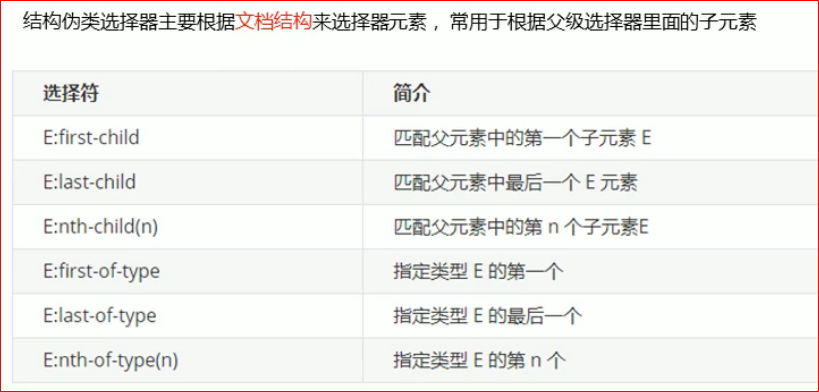
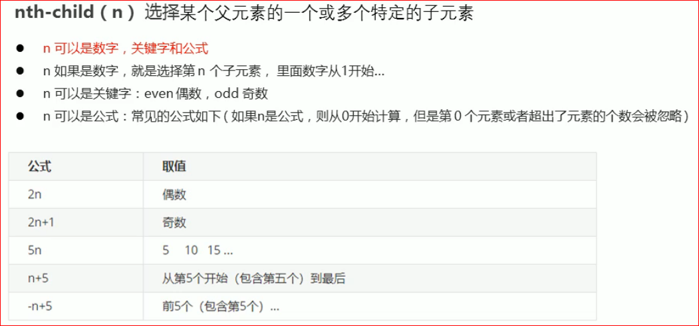

- 将ui的第一个li 背景颜色改为 灰色
- 将ui的第一个li 背景颜色改为 紫色
- 将ui的第一个li 背景颜色改为 粉色
- 将ui的第一个li 背景颜色改为 粉色
- 将ui的第一个li 背景颜色改为 粉色
1
2
3
4
5
6

注意: -n+5 不能写成 5-n
nth-child(n) 和 nth-of-type(n) 用法类似; 区别如下:
- nth-child 先将父元素所有的子元素排序, 先去找第n个元素, 然后对比第n个元素和元素E是否匹配
- nth-of-type 先将父元素里面子元素为E的标签进行排序, 然后再去找第n个元素E
例如:
我是 p 标签
我是 div1 标签
我是 div2 标签
我是 span 标签
我是 div3 标签